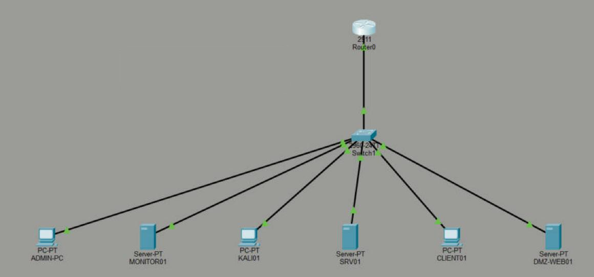
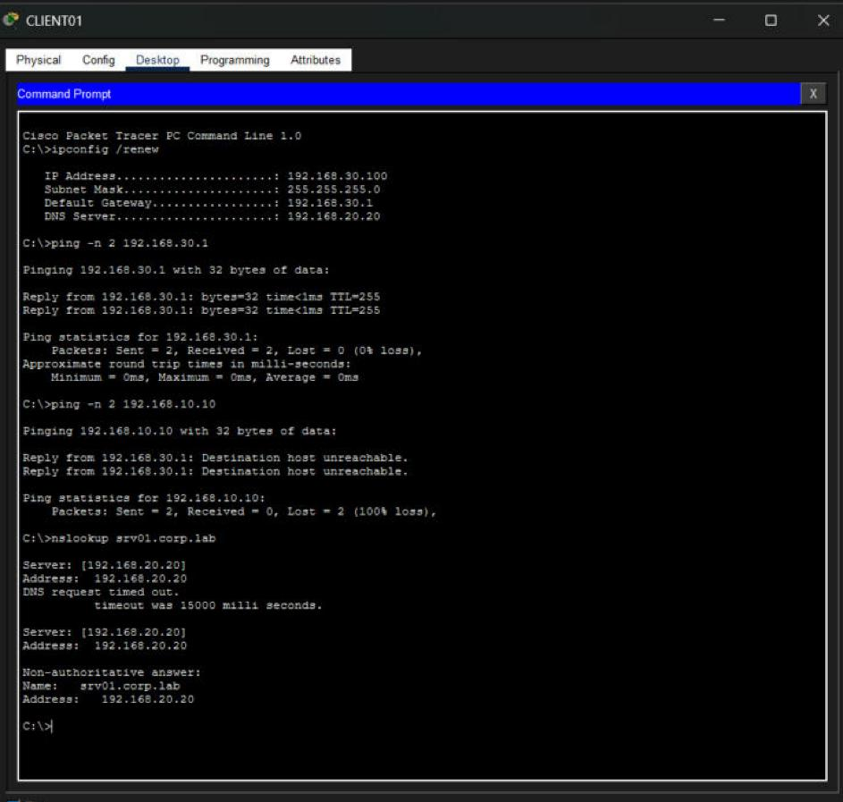
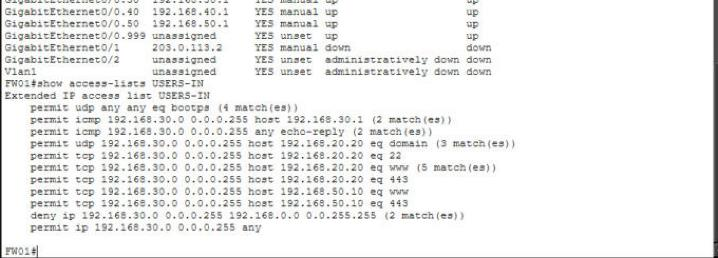
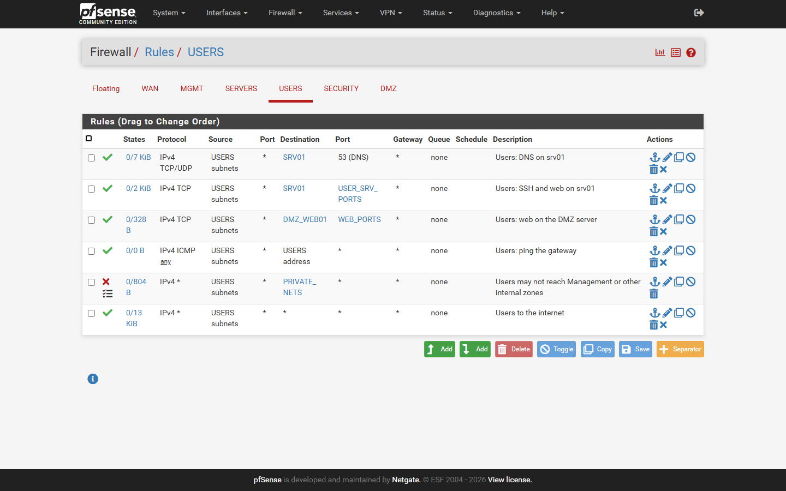
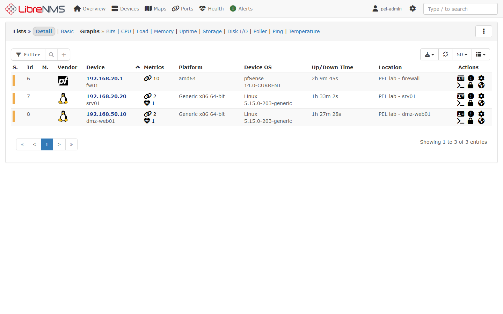

A segmented five-zone network that was built, monitored, attacked (with authorisation, inside the lab only) and defended on one laptop. This guide gives every step in the order it was done, every tool and what it is for, the exact commands, the results, the problems solved, and a full interview-preparation section.
Goal. Build a small enterprise network the way a real company would separate it: administrators, servers, employees, a security team and a public DMZ each in their own zone, with a firewall between them. Then monitor it (SNMPv3, logs), attack it from a Kali machine inside the lab, detect the attacks (IDS and SIEM), respond (automatic blocking, incident reports) and prove every claim with saved evidence.
The project covers the work of four roles at once:
| Role | What this lab shows |
|---|---|
| Network Engineer | Zone design and IP plan, firewall rules, VLANs/trunk/ACLs (Cisco), DHCP, DNS, NAT, SNMPv3 monitoring |
| Linux System Administrator | Ubuntu servers built by script, netplan, UFW, SSH hardening, BIND9, Nginx, rsyslog, systemd troubleshooting |
| Network Security Engineer | Default-deny pfSense policy, segmentation tests, IDS sensor placement, rule writing and tuning, hardening |
| Junior Security Analyst (SOC) | Nmap assessment, Wireshark analysis, Suricata and Wazuh alert triage, correlation, active response, incident reports |
| Area | Delivered |
|---|---|
| Firewall | pfSense CE 2.7.2 (fw01) with six interfaces, aliases, a default-deny rule set per zone, outbound NAT, DHCP for Users, remote syslog and an SNMPv3 agent, all written by one re-runnable PHP script. |
| Servers | srv01 (DNS + intranet web), dmz-web01 (public web), client01 (employee PC), all Ubuntu 22.04 built by server-setup.sh, each with UFW and SSH hardening. |
| Monitoring & security server | monitor01: LibreNMS (SNMPv3), Suricata 8 IDS on two sensor NICs, Wazuh 4.14 SIEM manager, rsyslog collector. |
| Attacker | kali01 (Kali 2025.4) in the Security zone, allowed to reach only the two authorised targets. |
| Cisco | CORE-SW1 (2960) and FW01 (ISR 2911) configs: VLANs, 802.1Q trunk, port security, DHCP snooping, router-on-a-stick with zone ACLs; built and tested in Packet Tracer. |
| Analysis & response | Nmap assessment, Wireshark capture analysis, DNS investigation, Suricata/Wazuh alert analysis, a troubleshooting workflow and 7 incident reports. |
| Verification | tests/run-all.sh: 36/36 PASS; connectivity matrix 51/51 from all five hosts; 10 Packet Tracer screenshots, 18 GUI screenshots, raw evidence files and a pcap. |
topology/ addressing plan (CSV), diagram, Packet Tracer topology image
cisco/ core-sw1.cfg, fw01-edge.cfg, packet-tracer/ (.pkt, generator, generated pastes)
firewall/ pfsense-configure.php (whole policy), pfsense-snmpv3.sh, README (rules explained)
linux/ server-setup.sh, monitor01-setup.sh, ssh-hardening.sh, suricata-config.py,
wazuh-manager-config.py, dns/ (BIND zone files)
monitoring/ LibreNMS and Wazuh overview
cybersecurity/ nmap / wireshark / suricata / wazuh write-ups, suricata/local.rules,
scripts/ (assessment, attack simulation, capture, SNMP tests, connectivity matrix),
evidence/ (raw output, pcap)
troubleshooting/ workflow.md, incident-reports/ IR-001 ... IR-007
lab/ vbox/ (PowerShell VM builders, console driver), screenshots.py
tests/ run-all.sh, last-run.txt
screenshots/ pfSense, LibreNMS, packet-tracer/
docs/ assignments.md (index), build-log.md, this guide
| Zone | VLAN | Network | Gateway | Hosts | Purpose |
|---|---|---|---|---|---|
| Management | 10 | 192.168.10.0/24 | .1 | CORE-SW1 SVI .2 (Cisco) | network device management |
| Servers | 20 | 192.168.20.0/24 | .1 | monitor01 .10, srv01 .20 | Linux infrastructure |
| Users | 30 | 192.168.30.0/24 | .1 | client01 (DHCP .100–.199) | employee devices |
| Security | 40 | 192.168.40.0/24 | .1 | kali01 .10 | authorised security testing |
| DMZ | 50 | 192.168.50.0/24 | .1 | dmz-web01 .10 | public-facing services |
| WAN | – | 10.0.2.0/24 | 10.0.2.2 | fw01 10.0.2.15 | internet via VirtualBox NAT |
The gateway of every zone is .1 on fw01. In VirtualBox each zone is a separate internal network
(pel-mgmt, pel-servers, pel-users, pel-security, pel-dmz): a private layer-2
segment whose only way out is fw01. That behaves exactly like an access VLAN behind a firewall.
Internet (VirtualBox NAT, 10.0.2.0/24)
|
fw01 pfSense CE 2.7.2
routing, default-deny rules, NAT, DHCP (Users), syslog out
+---------------+------------+------------+---------------+
pel-mgmt pel-servers pel-users pel-security pel-dmz
192.168.10/24 .20/24 .30/24 .40/24 .50/24
(switch SVI monitor01 .10 client01 kali01 .10 dmz-web01 .10
in PT) srv01 .20 DHCP .100+
monitor01 also has a 2nd NIC on pel-dmz with NO IP (IDS sensor)
| From \ To | Management | Servers | Users | Security | DMZ | Internet |
|---|---|---|---|---|---|---|
| Management | – | allow | allow | allow | allow | allow |
| Servers | SNMP/SSH from monitor01 only | – | deny | deny | SNMP from monitor01 only | allow (updates) |
| Users | deny | DNS, SSH, web to srv01 only | – | deny | web only | allow |
| Security | deny | srv01 only (test target) | deny | – | dmz-web01 (test target) | allow |
| DMZ | deny (logged) | Wazuh agent ports to monitor01 only | deny | deny | – | allow (updates) |
| VM | OS | RAM | NICs | Role |
|---|---|---|---|---|
| fw01 | pfSense CE 2.7.2 (FreeBSD 14) | 1 GB | 6: WAN (NAT) + 5 zones | firewall, router, NAT, DHCP |
| monitor01 | Ubuntu 22.04 (linked clone of the earlier ENL server) | 2 GB | NAT (host mgmt), Servers, DMZ (no IP) | LibreNMS, Suricata, Wazuh manager, rsyslog |
| srv01 | Ubuntu 22.04 | 1 GB | Servers | BIND9 DNS, Nginx intranet, Wazuh agent 001 |
| dmz-web01 | Ubuntu 22.04 | 768 MB | DMZ | Nginx public site, Wazuh agent 002 |
| client01 | Ubuntu 22.04 | 768 MB | Users | employee client (DHCP) |
| kali01 | Kali Linux 2025.4 | 1 GB | Security + NAT (no default route) | authorised attacker / tester |
The inner VMs have no direct path from the host. They are reached by SSH through fw01 as a jump host
(ssh -J, wrapped in .lab-local/in.sh), which is how a bastion host works in real networks.
The steps below are in the real order. Each has what was done, why, and the commands. Secrets are
shown as placeholders such as <SNMP_AUTH>; the real values exist only in the git-ignored
.lab-local/ folder and in /root/lab-secrets.env (mode 600) on each VM.
The project brief defined five zones, the tools (pfSense, Cisco, LibreNMS, Kali, Suricata, Wazuh, Wireshark), 12 assignments, 4 scenarios and a repository layout. First the addressing plan, the policy matrix and the folder structure were written. A rule was set from the start: no password, key or SNMP secret is ever committed.
# repository + git-ignored secrets folder git init enterprise-infrastructure-security && cd enterprise-infrastructure-security echo ".lab-local/" >> .gitignore # lab secrets generated randomly, never typed into chat or files that are committed python -c "import secrets; print(secrets.token_urlsafe(18))" ssh-keygen -t ed25519 -f .lab-local/pel_ed25519 -N "" # one lab SSH key git remote add origin https://github.com/muttakin210/Enterprise-Infrastructure-Security-Lab.git git push -u origin main
Why: three servers need the same OS. One base install, then linked clones, saves disk space and time.
powershell -File lab\vbox\new-ubuntu-base.ps1 -Iso C:\...\ubuntu-22.04.5-live-server-amd64.iso # inside: VBoxManage createvm / modifyvm / storagectl, then VBoxManage unattended install pel-base --iso ... --user <LAB_USER> --password <LAB_PASS> --full-user-name 'Lab Admin' ... # the values come from .lab-local/secrets.env, never typed into the script VBoxManage snapshot pel-base take base # linked clones are made from this snapshot
What: a FreeBSD VM with six NICs (WAN on NAT, one internal network per zone). The ISO was checked against
Netgate's SHA-256. The installer was driven over the headless console by sending keystrokes
(lab/vbox/vmcon.sh), and then SSH was enabled from the console menu (option 14).
powershell -File lab\vbox\new-fw01.ps1 # VM with em0..em5 certutil -hashfile pfSense-CE-2.7.2-RELEASE-amd64.iso SHA256 # compare with Netgate's hash bash lab/vbox/vmcon.sh fw01 shot.png ENTER WAIT:3 ... # type into the installer, take a screenshot VBoxManage modifyvm fw01 --natpf1 "ssh,tcp,127.0.0.1,2250,,22" --natpf1 "gui,tcp,127.0.0.1,8443,,443"
Configuration as code: instead of clicking 30 rules in the GUI, one PHP script writes the whole policy
through pfSense's own config API (write_config), so it is repeatable and the GUI still shows everything.
scp firewall/pfsense-configure.php root@fw01:/root/ ssh root@fw01 'php -f /root/pfsense-configure.php /root/pel.env' # interfaces + IPs, aliases (PRIVATE_NETS, WEB_PORTS ...), per-zone rules, outbound NAT, # DHCP .100-.199 on USERS, remote syslog to 192.168.20.10, key-only SSH, admin password ssh root@fw01 'sh /root/pfsense-snmpv3.sh /root/pel.env' # net-snmp v3-only agent (bsnmpd only speaks v1/v2c) ssh root@fw01 'pfctl -sr | wc -l; pfctl -s state | head' # check the loaded rules and states
Linked clones of the base. In the build phase NIC1 is on NAT so apt works; then the NIC moves onto its zone's
internal network and the VM can only be reached through fw01.
powershell -File lab\vbox\new-clones.ps1 # clones on NAT with SSH forwards sudo ./server-setup.sh srv01 packages # hostname, packages, SNMPv3, BIND/Nginx, UFW, Wazuh agent sudo ./server-setup.sh srv01 network # zone netplan (static .20, gw .1, DNS 192.168.20.20) powershell -File lab\vbox\new-clones.ps1 -Finalize # move NIC1 onto pel-servers / pel-dmz / pel-users
What server-setup.sh configures on each role:
net-snmp-create-v3-user -ro -A <SNMP_AUTH> -X <SNMP_PRIV> -a SHA -x AES monitoruser, and
rouser monitoruser priv (encryption required). No communities, so v1/v2c are off.corp.lab zone and reverse zone, recursion only for lab networks, version hidden, query log; Nginx intranet page.server_tokens off; it uses 1.1.1.1 as DNS because the DMZ may not reach internal DNS.WAZUH_MANAGER=192.168.20.10 apt-get install wazuh-agent, and the repo is then disabled to pin the version.preserve_hostname: true so cloud-init does not rename the clone back to the base name.sudo bash linux/ssh-hardening.sh labadmin # writes /etc/ssh/sshd_config.d/10-pel-hardening.conf: PermitRootLogin no PasswordAuthentication no AuthenticationMethods publickey AllowUsers labadmin MaxAuthTries 3 LoginGraceTime 30 X11Forwarding no LogLevel VERBOSE Banner /etc/issue.net Ciphers chacha20-poly1305, aes256-gcm, aes128-gcm MACs *-etm only KexAlgorithms curve25519 sshd -t && systemctl reload ssh # test the config before reload: never lock yourself out sshd -T | grep -E 'passwordauthentication|permitrootlogin' # effective values
The cloud-init drop-in 50-cloud-init.conf (which turns passwords back on) is removed, because sshd uses the
first value it reads.
monitor01 is a linked clone of the earlier ENL lab server, which already had a working LibreNMS. That saved a long
install. monitor01-setup.sh renames it, removes old devices and logs, disables services that are no longer needed,
fixes DNS, and installs the security stack.
powershell -File lab\vbox\new-monitor01.ps1 # NIC1 NAT (host :2230 ssh, :8030 LibreNMS), NIC2 Servers, NIC3 DMZ, both promiscuous sudo bash linux/monitor01-setup.sh # 1 identity: hostnamectl, /etc/hosts (192.168.20.1 fw01 so rsyslog names it correctly) # 2 netplan: enp0s8 192.168.20.10/24 gw .1; enp0s9 DMZ with NO IP (stealth sensor) # 3 Suricata: add-apt-repository -y ppa:oisf/suricata-stable && apt-get install -y suricata jq python3 linux/suricata-config.py /etc/suricata/suricata.yaml # HOME_NET, af-packet enp0s8 + enp0s9, local.rules suricata-update # ET Open, ~53,000 rules suricata -T -c /etc/suricata/suricata.yaml # config test before restart # 4 Wazuh manager (no indexer/dashboard): apt-get install -y wazuh-manager python3 linux/wazuh-manager-config.py /var/ossec/etc/ossec.conf # eve.json, fw01 syslog, active response printf '[Service]\nTimeoutStartSec=600\n' > /etc/systemd/system/wazuh-manager.service.d/timeout.conf # 5 UFW: SSH/LibreNMS from host + Management, syslog 514 from fw01, 1514/1515 for agents
# fw01 syslog lands in /var/log/remote/ via rsyslog; Wazuh reads that file tail -f /var/log/remote/all-devices.log | grep filterlog # Wazuh agents sudo /var/ossec/bin/agent_control -l # 001 srv01, 002 dmz-web01: Active # LibreNMS: add each device with SNMPv3 authPriv sudo -u librenms lnms device:add --v3 --authname monitoruser --authpass <SNMP_AUTH> --authalgo SHA \ --cryptopass <SNMP_PRIV> --cryptoalgo AES 192.168.20.1 </dev/null sudo -u librenms lnms device:poll 192.168.20.1
Result: fw01 (pfSense, 10 ports), srv01 and dmz-web01 polled over SNMPv3. pfSense's firewall log lines arrive in Wazuh.
powershell -File lab\vbox\new-kali.ps1 # official Kali VirtualBox image, eth0 Security, eth1 NAT # on kali01: static address in the Security zone, NAT only for the host's SSH (never the default route) nmcli con add type ethernet ifname eth0 con-name sec0 ipv4.method manual \ ipv4.addresses 192.168.40.10/24 ipv4.gateway 192.168.40.1 ipv4.dns 192.168.20.20 nmcli con mod nat1 ipv4.never-default yes sudo systemctl set-default multi-user.target # no desktop: the laptop has little RAM left # client01 gets its address from fw01's DHCP ip -br a # 192.168.30.100/24
Each assignment is a script, run on the right host, with output saved to cybersecurity/evidence/. Section 4
explains each one. The order was: Nmap (A1–A3) → SSH before/after (A4) → SNMPv3 tests (A6) → Wireshark (A7) →
attack simulation for DNS, Suricata and Wazuh (A8–A10) → connectivity matrix and the DMZ test (A5, A11, scenario 4)
→ incident reports (A12).
bash .lab-local/in.sh kali01 'sudo bash -s' < cybersecurity/scripts/nmap-assessment.sh bash .lab-local/in.sh kali01 'sudo bash -s' < cybersecurity/scripts/attack-simulation.sh bash .lab-local/mon.sh 'sudo bash -s' < cybersecurity/scripts/snmpv3-tests.sh bash .lab-local/in.sh srv01 "bash -s srv01" < cybersecurity/scripts/connectivity-matrix.sh
pfSense cannot run in Packet Tracer, so the same policy was written for Cisco: CORE-SW1 (2960) with VLANs and a trunk,
and FW01 (ISR 2911) as a router-on-a-stick with one sub-interface and one inbound ACL per zone. A Python script turns
the configs into Packet Tracer pastes (PT's IOS has no SNMPv3 and no log keyword on ACLs).
python cisco/packet-tracer/make_pt_configs.py # -> configs/CORE-SW1.txt, configs/FW01.txt # in PT: 2911 G0/0 <-> 2960 Gi0/1 (straight-through!), Fa0/1-6 to six end devices, paste configs, write memory show vlan brief | show interfaces trunk | show port-security | show ip dhcp snooping show ip interface brief | show ip dhcp binding | show access-lists USERS-IN
End devices were set up (static IPs, DHCP for CLIENT01, DNS records and HTTP on SRV01) and isolation was tested with ping, nslookup and the PT web browser.
python lab/screenshots.py # Playwright logs into pfSense and LibreNMS, saves 18 screenshots bash tests/run-all.sh # 36 checks, PASS / FAIL / SKIP # before every commit: scan the staged files for every lab secret value and for private keys git diff --cached | grep -F -- "<each secret value>" ; git diff --cached | grep "BEGIN .*PRIVATE KEY" git commit -m "..." && git push # roughly every 10 minutes of work
| # | Assignment | How it was done | Result |
|---|---|---|---|
| 1 | Host discovery | nmap -sn -PE -PS22,80,443 -n <zone>/24 from kali01 for all 5 zones | Security: .1, .10; Servers: only .20; DMZ: .10; Users and Management: 0 hosts (invisible) |
| 2 | Port scanning | nmap -sS -p- --min-rate 800 and nmap -sU --top-ports 25 on srv01, dmz-web01 | srv01 open 22, 53, 80; dmz-web01 open 80; 443 closed; the rest filtered (UFW drop) |
| 3 | Service enumeration | nmap -sV -sC, NSE ssh-auth-methods, ssh2-enum-algos, dns-nsid, dns-recursion | SSH publickey only, modern algorithms; BIND version hidden; nginx version hidden |
| 4 | SSH hardening | ssh-hardening.sh; compared Nmap and sshd -T before/after | password and root login off; Hydra cannot even try passwords |
| 5 | Firewall rule testing | connectivity-matrix.sh on every host: TCP connect / ping to each target, compared with the expected policy | 51/51 PASS |
| 6 | SNMPv3 security | snmpv3-tests.sh: correct authPriv, wrong password, authNoPriv, noAuthNoPriv, unknown user, v2c, v1; tcpdump of one request | only authPriv works; payload encrypted on the wire; two faults found and fixed (IR-004, IR-005) |
| 7 | Wireshark analysis | wireshark-capture.sh: tcpdump while generating DNS, HTTP, SSH, ICMP, blocked and closed-port traffic; analysed with tshark | 55 packets; clear-text DNS/HTTP, encrypted SSH, RST vs silent drop, one-way conversation = firewall drop |
| 8 | DNS investigation | tunnelling-style queries and a 150-query burst from kali01; BIND query log, Suricata, Wazuh | detected by sid 9000010/9000011 and Wazuh 12105 (IR-002) |
| 9 | Suricata IDS testing | attack-simulation.sh; alerts read from eve.json with jq | scan, web scanner, DNS, SSH flood, DMZ→Mgmt all detected; port-scan rule tuned |
| 10 | Wazuh log analysis | alerts.json grouped by agent and rule; correlation across Suricata, nginx and sshd | 5710 → 5712 (level 10) → active response blocked kali01 for 600 s |
| 11 | VLAN isolation | VirtualBox internal networks + the matrix; Cisco VLANs, trunk and ACLs in Packet Tracer | Users→Admin and DMZ→Mgmt blocked; allowed services work |
| 12 | Incident response | workflow + 7 reports with timeline, root cause, fix and lessons | IR-001 … IR-007 |
| Scenario | What happened and how it was handled |
|---|---|
| 1 Unauthorised port discovery | kali01 scanned the zones. Suricata sid 9000001 and ET 2024364 fired; the Wazuh timeline linked them to one source; the firewall hid Users and Management completely. IR-001. |
| 2 Suspicious DNS activity | Queries with 50-character random labels and a burst. Detected by Suricata and BIND errors in Wazuh; investigated in the query log; classified as a test. IR-002. |
| 3 Failed SSH login investigation | 12 invalid users in seconds. Wazuh 5712 (level 10) triggered firewall-drop on srv01; verified with iptables and the active-response log. IR-003. |
| 4 Segmentation / connectivity matrix | dmz-web01 tried 192.168.10.x. fw01 blocked and logged it, and the DMZ sensor alerted with sid 9000030 before the drop. IR-007 + 51/51 matrix. |
# port scan: one alert per source per minute after 40 SYNs alert tcp $HOME_NET any -> $HOME_NET any (msg:"PEL LAB Possible TCP port scan (SYN sweep)"; flags:S,12; threshold:type both, track by_src, count 40, seconds 60; classtype:attempted-recon; sid:9000001; rev:2;) # DNS tunnelling: a label of 40+ alphanumeric characters alert dns $HOME_NET any -> any 53 (msg:"PEL LAB DNS query with very long label"; dns.query; pcre:"/[a-z0-9]{40,}\./i"; classtype:policy-violation; sid:9000010; rev:1;) # SSH brute force: 10 new connections in 60 s alert tcp $HOME_NET any -> $HOME_NET 22 (msg:"PEL LAB SSH brute force"; flow:to_server; flags:S,12; threshold:type threshold, track by_src, count 10, seconds 60; sid:9000020; rev:1;) # segmentation: any DMZ packet towards Management alert ip 192.168.50.0/24 any -> 192.168.10.0/24 any (msg:"PEL LAB DMZ host contacting Management zone"; sid:9000030; rev:1;) # also: 9000002/3 NULL/XMAS scans, 9000011 DNS burst, 9000040 scanner user-agents (Nikto, NSE, gobuster)
<active-response> <command>firewall-drop</command> <!-- iptables DROP for the source IP --> <location>local</location> <!-- on the agent that saw the attack --> <rules_id>5712,5763</rules_id> <!-- invalid-user and failed-password brute force --> <timeout>600</timeout> <!-- removed automatically after 10 minutes --> </active-response>
For each tool: What it is, What it can do in general, and What I did with it in this lab.
What it is: a free type-2 hypervisor that runs virtual machines on a desktop OS.
Can do: VMs with many NICs; NAT, bridged, host-only and internal networks; snapshots and linked clones; port forwarding; headless VMs scripted by VBoxManage; promiscuous mode for sniffing.
I used it to: build 6 VMs by PowerShell script; make each zone an internal network; use linked clones from a snapshot; forward only the host's management ports; set promiscuous "allow-all" on monitor01's sensor NICs (like a SPAN port); drive the pfSense installer by sending keystrokes to a headless console.
What it is: an open-source firewall and router based on FreeBSD and its packet filter pf.
Can do: stateful filtering per interface, aliases, NAT and port forwards, DHCP/DNS services, VPN (IPsec, OpenVPN, WireGuard), traffic shaping, remote syslog, packages (Suricata, Snort, pfBlockerNG), high availability (CARP).
I used it to: route between 5 zones; enforce a default-deny, least-privilege policy written as code (PHP + write_config); run outbound NAT and DHCP for Users; log blocks and send them to monitor01; run a net-snmp SNMPv3-only agent; key-only SSH as the bastion host.
Key facts: rules apply on the interface where traffic enters; first match wins; state tracking lets replies back in; scrub drops malformed packets (why NULL/XMAS scans never reached the sensor).
Ubuntu: stable server Linux; used for all servers and the client. Configured with netplan, systemd, apt and UFW.
Kali: Debian-based distribution with hundreds of security tools (Nmap, Hydra, Wireshark, Metasploit, Burp ...). Used only as the authorised tester in the Security zone.
Ubuntu's YAML network configuration (renders to systemd-networkd). Used: static IPs, gateways, DNS per zone; an address-less sensor NIC on monitor01; NAT NIC with use-routes: false.
Host firewall front-end to netfilter. Used: default deny on every server; SNMP only from monitor01; SSH only from Management and the jump host. Wazuh active response adds iptables DROP rules.
Encrypted remote login, file copy and tunnels. Used: key-only access, AllowUsers, modern ciphers, VERBOSE logs; fw01 as a jump host (ProxyCommand / -J).
Authoritative and recursive DNS server. Used: corp.lab forward and reverse zones, recursion only for lab networks, version hidden, query logging for the DNS investigation.
Web server and reverse proxy. Used: intranet site on srv01, public site on dmz-web01, server_tokens off. Its 400 errors fed Wazuh rule 31151 during scanning.
Linux syslog daemon; can receive logs over UDP/TCP and write them per host. Used: received fw01's logs on UDP 514 into /var/log/remote/, which Wazuh reads.
What it is: SNMP lets a manager read device data (interfaces, traffic, CPU, uptime) over UDP 161. Version 3 adds users (USM) with authentication (SHA) and encryption (AES). Levels: noAuthNoPriv, authNoPriv, authPriv.
I used it to: run v3 authPriv-only agents on fw01, srv01 and dmz-web01; prove that wrong passwords, weaker levels, unknown users and v1/v2c are refused; show in tcpdump that the PDU is encrypted (only the USM header is visible); fix two real faults (IR-004, IR-005).
snmpget -v3 -l authPriv -u monitoruser -a SHA -A <SNMP_AUTH> -x AES -X <SNMP_PRIV> 192.168.20.1 sysName.0 snmpwalk -v3 -l authPriv ... 192.168.20.20 ifDescr
What it is: an open-source network monitoring system (PHP + MariaDB) that auto-discovers devices over SNMP.
Can do: port graphs, health sensors, alert rules (mail, Slack ...), event logs, maps, syslog, API.
I used it to: monitor fw01 (detected as pfSense, 10 ports), srv01 and dmz-web01 over SNMPv3; added them with lnms device:add --v3; screenshots as evidence.
What it is: an open-source network intrusion detection and prevention engine. It reads packets (af-packet, pcap, NFQUEUE), decodes protocols and matches signatures.
Can do: signature detection (ET Open/Pro rules), protocol logging (DNS, HTTP, TLS, flows) in eve.json, file extraction, inline blocking (IPS mode), multi-threaded capture.
I used it to: place two sensors (Servers segment and a stealth DMZ sensor with no IP); load ET Open plus 8 custom rules; detect scans, scanner user agents, DNS tunnelling, SSH floods and DMZ→Mgmt traffic; tune a noisy rule (1,700 alerts per scan → 1 per minute); reload rules live with kill -USR2; fix a crash loop (IR-006).
jq -c 'select(.event_type=="alert") | [.timestamp,.src_ip,.dest_ip,.alert.signature_id,.alert.signature]' /var/log/suricata/eve.json suricata -T -c /etc/suricata/suricata.yaml suricata-update kill -USR2 $(pidof suricata)
What it is: an open-source security platform: agents collect logs and system data, the manager decodes them, applies rules (levels 0–15) and raises alerts.
Can do: log analysis, file integrity monitoring, security configuration assessment (CIS), vulnerability detection, rootkit checks, active response, compliance mapping (PCI DSS, GDPR ...); dashboards with the indexer.
I used it to: run a manager with agents on srv01 and dmz-web01; ingest Suricata eve.json and fw01 syslog; correlate one attacker across network, web and SSH logs; automatically block the brute-forcing host with firewall-drop for 600 s; read alerts with jq (no indexer: not enough RAM).
/var/ossec/bin/agent_control -l
jq -c 'select(.rule.level>=10) | [.timestamp,.agent.name,.rule.id,.rule.description,.data.srcip]' /var/ossec/logs/alerts/alerts.json
tail /var/ossec/logs/active-responses.log # on the agentWhat it is: the standard network scanner. Can do: host discovery, TCP/UDP port scans, service and version detection, OS detection, NSE scripts for checks and enumeration, many output formats.
I used it to: discover hosts per zone (proving which zones are invisible), scan all 65,535 TCP ports, enumerate SSH and DNS with NSE, and generate attack traffic for the IDS.
nmap -sn -PE -PS22,80,443 -n 192.168.20.0/24 nmap -sS -p- --min-rate 800 192.168.20.20 nmap -sV -sC -p22,53,80,443 192.168.20.20 nmap -p22 --script ssh-auth-methods,ssh2-enum-algos 192.168.20.20
open = a service answered (SYN/ACK); closed = RST (reachable, nothing listening); filtered = no answer (a firewall dropped it).
What they are: tcpdump captures packets on the command line; Wireshark is the GUI analyser; tshark is Wireshark's command-line engine.
Can do: capture and display filters, protocol decoding, follow TCP streams, statistics (protocol hierarchy, conversations, I/O graphs), export objects.
I used it to: capture lab traffic on kali01 and analyse it: clear-text DNS/HTTP vs encrypted SSH, RST (closed) vs silence (firewall drop), one-way conversations; capture SNMPv3 to prove encryption.
tcpdump -i eth0 -n -s0 -w lab.pcap tshark -r lab.pcap -q -z io,phs tshark -r lab.pcap -q -z conv,ip tshark -r lab.pcap -Y "tcp.flags.reset==1" tshark -r lab.pcap -Y dns -T fields -e dns.qry.name -e dns.flags.rcode
Online password-guessing tool for SSH, FTP, HTTP forms and more. Used: brute-force simulation; it stopped at once because the server allows only keys, which proved the hardening.
dig queries DNS; curl makes HTTP requests (custom user agents for scanner tests); nc -z tests whether a TCP port answers. Used in the matrix, the DNS tests and the attack simulation.
Command-line JSON processor. Used: to filter and count Suricata eve.json and Wazuh alerts.json, since there was no dashboard.
Cisco's network simulator. Used: CORE-SW1 (2960) and FW01 (2911): VLANs, 802.1Q trunk, native VLAN 999, port security, DHCP snooping, BPDU guard, router-on-a-stick, zone ACLs, DHCP pool; end-device tests.
All builds are scripts: PowerShell + VBoxManage for VMs, Bash for server setup, tests and assessments, so the lab can be rebuilt.
Idempotent config edits (suricata-config.py, wazuh-manager-config.py), the Packet Tracer config generator, and Playwright for logged-in GUI screenshots.
pfsense-configure.php writes interfaces, aliases, rules, NAT, DHCP and syslog through pfSense's own functions, so the whole firewall is code.
Version control with small, frequent commits, a git-ignored secrets folder and a secret scan before every commit.
bash .lab-local/fw.sh # root@fw01 (127.0.0.1:2250) bash .lab-local/mon.sh # monitor01 (127.0.0.1:2230); LibreNMS http://127.0.0.1:8030 bash .lab-local/in.sh srv01 'cmd' # inner VM through fw01 as jump host (srv01, dmz-web01, kali01, client01) https://127.0.0.1:8443 # pfSense GUI VBoxManage list runningvms ; VBoxManage startvm kali01 --type headless ; VBoxManage controlvm kali01 acpipowerbutton
pfctl -sr # loaded rules pfctl -s state | grep 192.168.40.10 # live states pfctl -s info # counters clog -f /var/log/filter.log # firewall log php -f /root/pfsense-configure.php /root/pel.env # re-apply the whole policy sockstat -4l # listening sockets pgrep -l snmpd dhcpd
ip -br a ; ip route ; resolvectl status sudo netplan try / apply sudo ss -tulpn systemctl status nginx named ssh snmpd wazuh-agent sudo ufw status numbered ; sudo tail /var/log/ufw.log sudo sshd -t ; sudo sshd -T | grep -i password dig @192.168.20.20 www.corp.lab ; dig +short -x 192.168.20.20 sudo journalctl -u named | grep query: ; sudo journalctl -u ssh --since -10min curl -I http://192.168.50.10
systemctl is-active suricata wazuh-manager rsyslog
sudo jq -c 'select(.event_type=="alert")|[.src_ip,.alert.signature_id,.alert.signature]' /var/log/suricata/eve.json | tail
sudo jq -r '.alert.signature' /var/log/suricata/eve.json | sort | uniq -c | sort -rn | head # top signatures
sudo /var/ossec/bin/agent_control -l
sudo jq -r '[.rule.id,.rule.level,.rule.description]|@tsv' /var/ossec/logs/alerts/alerts.json | sort | uniq -c | sort -rn | head
sudo tail -f /var/log/remote/all-devices.log | grep filterlog
sudo -u librenms lnms device:poll 192.168.20.1
sudo bash -c '. /root/lab-secrets.env; snmpget -v3 -l authPriv -u monitoruser -a SHA -A "$SNMP_AUTH" -x AES -X "$SNMP_PRIV" 192.168.20.1 sysName.0'
nmap -sn -n 192.168.20.0/24 ; nmap -sS -p- -n 192.168.20.20 ; nmap -sV -sC -p22,53,80 192.168.20.20 curl -A "gobuster/3.6" http://192.168.50.10/.git/config dig @192.168.20.20 $(head -c 30 /dev/urandom | od -An -tx1 | tr -d ' \n').exfil-test.corp.lab for u in admin root test; do ssh -o BatchMode=yes $u@192.168.20.20 true; done sudo tcpdump -i eth0 -n -w lab.pcap ; tshark -r lab.pcap -q -z conv,ip
sudo iptables -S | grep DROP # -A INPUT -s 192.168.40.10/32 -j DROP while blocked
sudo tail /var/ossec/logs/active-responses.log
show vlan brief ; show interfaces trunk ; show interfaces status ; show port-security ; show ip dhcp snooping show ip interface brief ; show ip dhcp binding ; show access-lists ; show cdp neighbors ; show running-config configure terminal / interface gi0/1 / shutdown / no shutdown / end / write memory
bash tests/run-all.sh # 36 checks bash .lab-local/in.sh srv01 "bash -s srv01" < cybersecurity/scripts/connectivity-matrix.sh # one host's matrix
tests/run-all.sh → 36 passed, 0 failed, 0 skipped with all six VMs on.
It covers fw01 (rules, DHCP, SNMP, syslog), monitor01 services, Suricata rules and events, Wazuh agents, LibreNMS, SNMPv3 to 3 devices
(and v2c refused), SSH hardening, UFW, DNS, the matrix from 5 hosts, and a secret scan of the repository.
Packet Tracer topology: FW01 (2911) router-on-a-stick, CORE-SW1 (2960), six end devices, all links up.

CLIENT01: DHCP lease, gateway reachable, ADMIN-PC blocked, DNS works.

USERS-IN ACL hit counters: the allowed and the denied entries both match.

pfSense rules on the USERS interface: only DNS, SSH and web to srv01, web to the DMZ, ping to the gateway; block PRIVATE_NETS (logged); then internet.

LibreNMS polling fw01, srv01 and dmz-web01 over SNMPv3 authPriv.
| Evidence | Shows |
|---|---|
cybersecurity/evidence/a01–a03*.txt | raw Nmap output (discovery, all ports, services) |
a04-ssh-before/after.txt | SSH auth methods and algorithms before and after hardening |
a06-snmpv3.txt, a06-snmpv3-before-fix.txt | SNMPv3 test matrix before and after the IR-005 fix |
a07-lab-traffic.pcap, a07-wireshark-analysis.txt | the capture, openable in Wireshark, and its analysis |
a08-dns-investigation.txt, a09-suricata-alerts.txt, a10-*.txt | DNS logs, IDS alerts, SIEM alerts and active response |
connectivity-matrix.csv | 51 rows: source, target, service, expected, result, PASS |
screenshots/ | 13 pfSense, 5 LibreNMS, 10 Packet Tracer |
tests/last-run.txt | the 36/36 health check output |
All reports follow the workflow in troubleshooting/workflow.md: define → layer 1-2 → layer 3 → policy →
layer 4 → layer 7 → evidence → one fix at a time → record.
| ID | Title | Root cause and response | Lesson |
|---|---|---|---|
| IR-001 | Unauthorised port discovery | Nmap sweeps from kali01. Suricata 9000001 + ET 2024364, Wazuh 86601. Users/Management showed 0 hosts because fw01 drops silently. | Tune scan rules: one alert per source, not thousands. |
| IR-002 | Suspicious DNS | 50-char random labels to exfil-test.corp.lab and a 150-query burst. Seen by Suricata 9000010/11 and BIND errors (Wazuh 12105). Classified as the authorised test. | Long labels + NXDOMAIN + volume = tunnelling pattern. |
| IR-003 | Failed SSH logins | 12 invalid users in seconds → 5710 ×12 → 5712 (level 10) → firewall-drop on srv01 for 600 s; no successful login. | Detection must follow hardening (5712 added). |
| IR-004 | fw01 SNMPv3 "Unknown user" | The v3 user was in net-snmp's persistent store, which is converted once and was lost on restart. Fix: createUser in the root-only config (mode 600). | Know where a daemon keeps its keys. |
| IR-005 | authNoPriv accepted | net-snmp-create-v3-user also wrote a bare rouser monitoruser that allowed no encryption. Removed it; retested. | Test the negative cases, not only "it works". |
| IR-006 | Suricata crash loop | Duplicate af-packet entries with the same cluster-id, and 10 threads missing the start deadline. Idempotent config, 1 thread per NIC. | "active" in systemd ≠ healthy; check capture stats. |
| IR-007 | DMZ → Management | dmz-web01 tried 192.168.10.x. Blocked and logged by fw01; DMZ sensor alerted (9000030) before the drop. | Defence in depth: policy + detection. |
| # | Problem | Cause | Fix |
|---|---|---|---|
| 1 | VBoxManage unattended failed | --install-additions=false is not a valid flag | removed the flag |
| 2 | pfSense ISO at 30 KB/s | slow official mirror | community mirror with parallel ranges, then verified Netgate's SHA-256 |
| 3 | monitor01 could not resolve names | resolved still pointed at the old lab's BIND | reset DNS in resolved.conf, netplan DNS |
| 4 | suricata -T -q hung | -q means NFQUEUE, not quiet | plain -T |
| 5 | Suricata restart loop | non-idempotent config, too many threads | IR-006 |
| 6 | wazuh-manager start timeout | first start slower than systemd's 90 s on 2 GB | TimeoutStartSec=600, vulnerability detection off |
| 7 | A Python escape wrote control bytes into ossec.conf | nested quoting in a shell heredoc | repaired the file; used sed and separate script files |
| 8 | srv01 renamed itself after reboot | cloud-init | preserve_hostname: true |
| 9 | dmz-web01 had no DNS | policy blocks DMZ → internal DNS | public resolver for the DMZ |
| 10 | SNMPv3 faults | see IR-004 / IR-005 | fixed in the scripts |
| 11 | Hydra stopped at once | password auth disabled (by design) | invalid-user logins to simulate brute force |
| 12 | fw01 logged as _gateway, every line twice | no hosts entry; "everything" + "filter" both sent | hosts entry; send "everything" only |
| 13 | Port-scan rule flooded the SIEM | threshold type threshold, 10 s | type both, 60 s: 1 alert per source per minute |
| 14 | PT trunk down after config | cross-over cable router ↔ switch | straight-through cable; check layer 1 first |
| 15 | Typed text lost in the PT CLI | automation types via the clipboard | PT's own Paste button |
| 16 | Capture showed only one-way traffic | kali01 was still blocked by active response | waited for the 600 s timeout and re-captured |
| Limitation | Why, and what a production version would do |
|---|---|
| Wazuh without indexer/dashboard | OpenSearch needs about 4 GB more RAM. Production: the full stack with dashboards and retention. |
| Cisco part is in Packet Tracer | No licensed IOS images. PT has no SNMPv3, so SNMPv3 is shown on pfSense/Ubuntu. FW01 (2911) stands in for pfSense with the same policy as ACLs. |
| Zones are VirtualBox internal networks | Equivalent to access VLANs behind the firewall; real 802.1Q tagging is shown in Packet Tracer. |
| monitor01 is a clone of an earlier lab server | Saved time and disk; old devices, logs and services removed. |
| Active response blocks only on the attacked host | Production: also push the IP to a firewall alias so the attacker cannot move to the next server. |
| No HTTPS on the web servers | Finding N-1: port 443 allowed but unused. Next step: TLS certificates, or close 443. |
| NULL/XMAS scans not alerted | pf scrub drops them before the sensor; a sensor in front of the firewall would see them. |
| Small VMs, one laptop | VMs are started a few at a time; kali01 runs without a desktop. |
kernel_packets = 0) and the journal, and found a restart every 3 minutes. The
af-packet config had duplicate interfaces with the same cluster-id, and 10 threads missed the start deadline. I rewrote the config
idempotently with one thread per NIC. R: Stable sensor, alerts on both segments; documented as IR-006. Lesson: "running" is not "working".rouser line. I removed it in
the build script and re-ran the test. R: Only authPriv works; tcpdump shows the payload encrypted. Lesson: test what should fail.permit tcp ... established, which is how the Cisco version is written.msg, content or pcre matches, flags, flow, threshold, classtype, sid and rev. Example: an alert when a DNS label is 40+ alphanumeric characters, for tunnelling.firewall-drop) that adds an iptables DROP for the source IP. A timeout removes it later (600 s).sshd -t before reloading so I cannot lock myself out.ss -tulpn on the host, then compare with an external nmap scan and the firewall rules.| 5 zones, 6 VMs, 1 firewall | 36/36 health checks, 51/51 matrix | 12 assignments, 4 scenarios, 7 IRs |
| ET Open ~53,000 + 8 lab rules | 1,700 → 1 alert per minute after tuning | Block time 600 s, Wazuh rule 5712 (level 10) |
| SNMPv3: SHA + AES, authPriv only | pfSense 2.7.2, Suricata 8.0.8, Wazuh 4.14 | Ubuntu 22.04, Kali 2025.4, PT 9.0 |
| Term | Meaning |
|---|---|
| Active response | An automatic action taken by the SIEM when a rule fires, such as blocking an IP. |
| af-packet | Linux capture method Suricata uses to read packets from a NIC at high speed. |
| Alias (pfSense) | A named group of addresses or ports used in rules (PRIVATE_NETS, WEB_PORTS). |
| authPriv | SNMPv3 level with authentication and encryption. |
| Bastion / jump host | The one host you SSH through to reach internal systems. |
| Default deny | Block everything unless a rule explicitly allows it. |
| Defence in depth | Several independent layers of security, so one failure is not enough. |
| DMZ | A zone for internet-facing services, separated from the internal network. |
| ET Open | Emerging Threats' free Suricata/Snort rule set. |
| eve.json | Suricata's JSON event log (alerts, DNS, HTTP, flows). |
| Idempotent | A script that can be re-run safely and always gives the same end state. |
| IDS / IPS | Intrusion detection (alerts) / prevention (blocks inline). |
| Lateral movement | An attacker moving from one compromised host to others. |
| Least privilege | Grant only the minimum access needed. |
| Linked clone | A VM that shares the base disk and stores only its own changes. |
| NXDOMAIN | DNS answer "this name does not exist". |
| Promiscuous mode | A NIC that receives all frames on the segment, not only its own. |
| Router-on-a-stick | Inter-VLAN routing on one trunk port with sub-interfaces. |
| Scrub (pf) | Packet normalisation that drops malformed packets. |
| SID | Signature ID of an IDS rule. |
| SIEM | Security Information and Event Management: central log collection and correlation. |
| SPAN port | A switch port that receives a copy of traffic for monitoring. |
| Stateful firewall | Tracks connections and allows reply traffic automatically. |
| Threshold (Suricata) | Limits how often a rule alerts, for example once per source per minute. |
| USM | SNMPv3 User-based Security Model. |
README.md, then docs/assignments.md for the index of every assignment and its evidence.